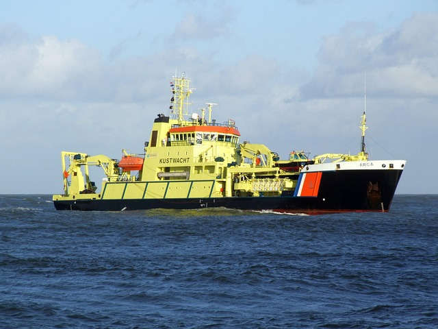
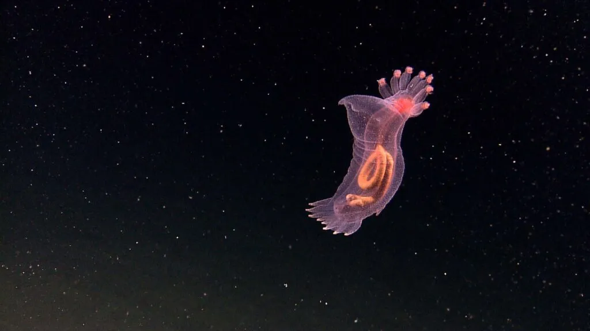
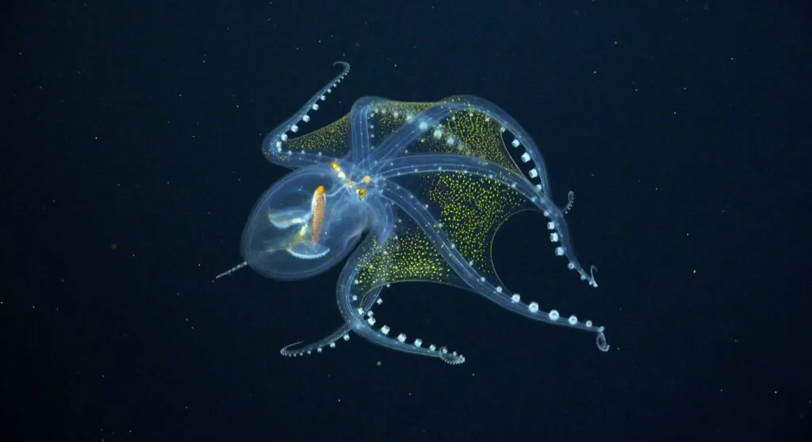
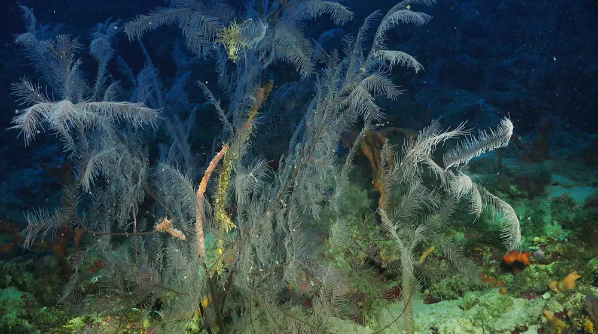
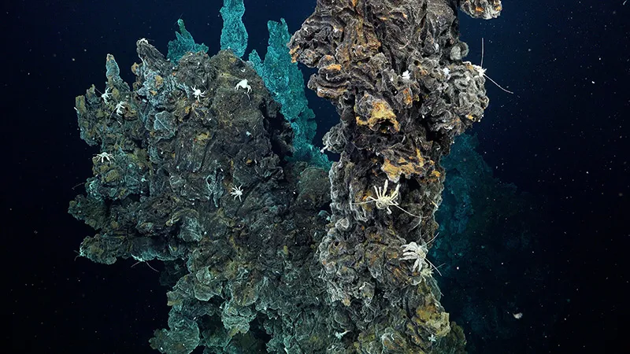
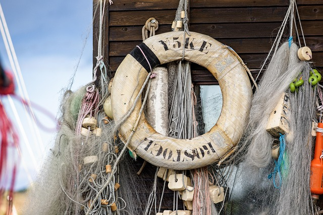

The Deep Sea Conservation Coalition is a global alliance of more than 130 organizations working to keep deep-sea ecosystems intact, visible, and part of the world’s climate and ocean agenda.
The ocean below 200 meters is still poorly understood, yet it faces fast-growing pressure from mining, fishing, and new industrial experiments.
01 / About DSCC
A coalition built to protect vulnerable deep-sea life
The Deep Sea Conservation Coalition was formed to bring science, advocacy, and international cooperation together. Its role is not to sell a product or collect donations, but to keep attention on the fragile habitats that lie far below the surface.
What the coalition does
DSCC works with environmental groups, researchers, and policy advocates to promote protections for deep-sea ecosystems. Its message is simple: if the seabed is damaged before we understand it, the loss is often irreversible.
The coalition focuses on practical public-interest goals, including stronger ocean governance, wider support for a mining moratorium, and better protection for vulnerable marine ecosystems.
Connects more than 130 member organizations
Translates science into policy-facing advocacy
Supports international ocean protection agreements
Coalition meetings and policy forums are part of how deep-sea protection stays visible in international discussions.
02 / How We Work
Science, advocacy, and coordination across the ocean policy space
The coalition does its work by bringing together a shared message, then carrying that message into negotiations, public campaigns, and expert discussions.

Scientists, field teams, and policy advocates help convert evidence into action.
From evidence to action
Deep-sea ecosystems are hard to see and easy to overlook. DSCC tries to close that gap by using accessible language and policy arguments that are grounded in evidence.
03 / Impact
A few numbers that explain the coalition’s reach
These figures reflect the coalition’s reach and long-term presence in deep-sea conservation.
130+member organizations working under the DSCC umbrella2004the year the coalition was founded21countries supporting a deep-sea mining moratorium16,000+km² of deep-sea habitat protected in one regional example
04 / Gallery
Visual moments from the deep ocean

Slide 1
Hidden biodiversity
Many deep-sea organisms depend on stable darkness, pressure, and chemistry. Once those conditions are disturbed, recovery can take a very long time.

Slide 2
Structural habitats
Corals and sponges build physical habitat in the deep sea, creating shelter and feeding grounds for a wide range of marine life.

Slide 3
Seafloor landscapes
Abyssal plains and ridges are vast, slow-changing environments. Mining equipment and sediment plumes can affect them across large distances.

Slide 4
Policy in action
Conservation is not only a scientific issue. It also depends on institutions, public meetings, and international cooperation that keep the topic on the agenda.
01 / 04Bioluminescent life drifting in the dark ocean. A reminder that the deep sea is full of specialized species and delicate ecosystems.
05 / Current Priorities
Three public-interest goals at the center of the campaign
The coalition’s current priorities can be read as a clear sequence: stop the most destructive fishing, pause deep-sea mining until its risks are understood, and strengthen the international rules that govern ocean space.

Priority 1
Stop bottom trawling on seamounts
DSCC argues that vulnerable marine ecosystems should be protected from weighted nets and rollers that can flatten decades of growth in a single pass.
The coalition supports a moratorium until science, governance, and justice questions are answered. That approach keeps irreversible damage from being treated as acceptable risk.
See the marine protected areas conversation in motion
The clip reinforces the public-welfare focus of the project: deep-sea conservation is not abstract, because policy choices shape which habitats remain intact for future generations.